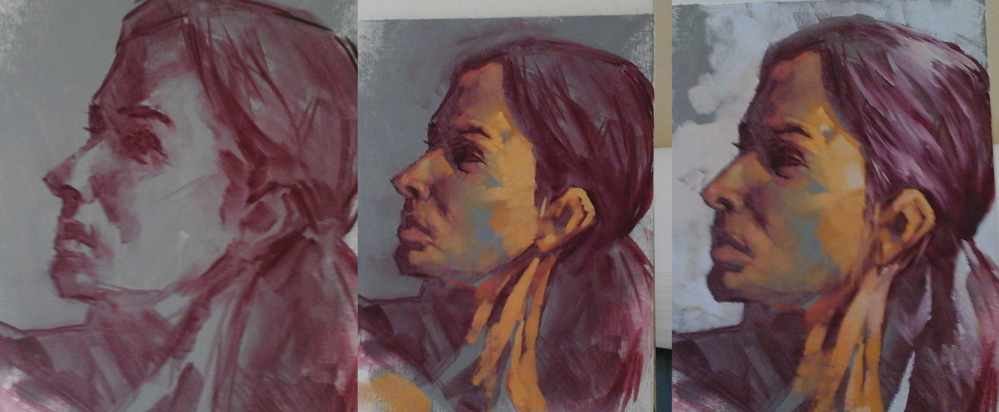

Technical blog entries
Cultural blog entries
My Perosnal thinking style
My personal thinking style (atleast this time I took the test) was Abstract sequential, which I can't disagree with. I do love theory and possibilities. When ever I learn a new trick or concept I'm always thinking of ways to implement it.
My interpretation of thise learning style is that I learn by doing and I learn more by examining the ideas and patters behind what I learned and implemented. Therefore the best way for me to learn at DBC would be just to throw myself head first into the coding nad sink as many hours into it as I can. Solve a problem, then solidify my learnings with a blog psot or two.
My biggest struggle so far?
So I just completed week 3 of phase 0 of DBC, and with that also comes another milestone of completing the first unit to the phase. So far my biggest struggles have been keeping up with the blogs, (Basically anything that isn't a ruby problem). The meat of this course for me would be the programming and learning and being of service to my peers though pairing sessions and answering question, and even giving and rating feedback. I find the blogs to be very much out of the beaten path for me and sometime it breaks up the momentum of my learning, but once I force myself to do the technical blog, I find that it really helps out to put my thoughts down on solid media.
Another thing I struggled with was my website, and continously upgrading or redoing it to fit on different sized screens and to make way for later functionality and templates I plan to implement by the end of the course.
Growth Mindset and Fixed Mindset
I always hope that I am in the category of a growth mindset, people talk about 'talent' and 'skill' like it's something that was given at birth. The only thing you're given is the chance to work hard nad dedicate hours into learning things.
I feel that people of a fixed mindset put too much emphasis into memorizing technical answers and not enough time into being creative in their solutions. I feel 100% that programming is a creative endeavor. Technical knowledge is nessesary but what makes for the best programmers are people who think differently and creativley. This is why I keep up with my art skills that I aquired in a past life as a pro/semi-pro artist. I make time atleast once a week to dedicate a day to drawing and painting, and still make it out to figure drawing workshops and paintings workshops, even if the workshop is in my house, and the model is on my tablet. Drawing and painting is my way to working-out and preserving the part of my brain that handles creativity and different ways to solve a problem.
For example this week I took about 3 hours away from painting to paint a portrait that I have painted a number of times before, but each time I paint this portrait I have a different color pallete and a different way of looking at the composition as a whole:
I love how I can start with a simple blocked in underpainting, and then imporvise the entire painting finding a dynamic solution to the different lights and skin tones, which never existed in my other portraits
This is how far I got with this one:
This is completely analogous to solving a complex programming problem. first break it up into small parts, much like how I start with one color and value, then move on to more complex colors and effects until I am left with something that I am satified with. Programming doesn't end until I both solve the problem, and the solution takes up as least lines as possible.
Keeping with my painting analogy, painters of a fixed mindset usually end up muddying up their colors because they are so focused to mixed perfectly and blending perfectly. Figure drawings of artists with fixed mindsets are usually the most stiff and uninteresting to view, because the artist and over thinking their drawing, as if its the only drawing they are ever going to be allowed to do. This is why I think that unlike the realms of playing an instrument for example, people that are perfectionists don't usually make the best artists.
People that maintain this type of mindset during programming, I think, have a very stiff and rigid understanding of the concepts. They might make something that works, but not very efficiently. They get so wrapped up in memorizing solutions and code that they miss the point of those solutions.
This is why I always hope to maintain a mindset that can dynamically grow and learn as needed or desired.
Another huge thing that seperates the two thought schools is that a growth minset embraces failures, for what they provide, namely a way to not fail the next time. It's always important, in any field, to learn from your failures.